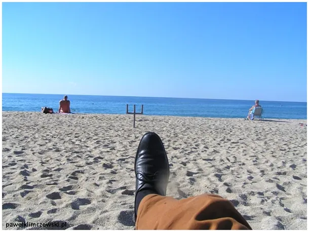
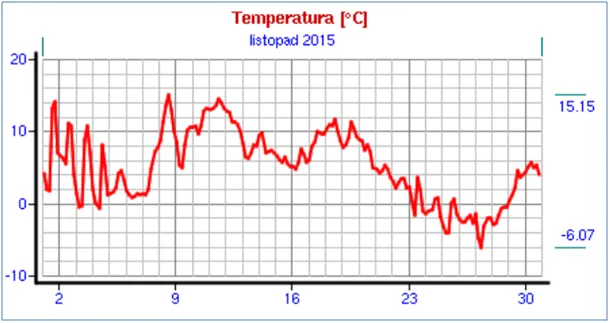
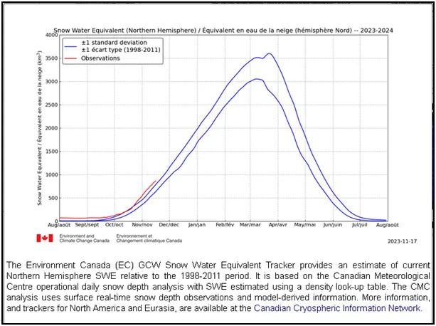
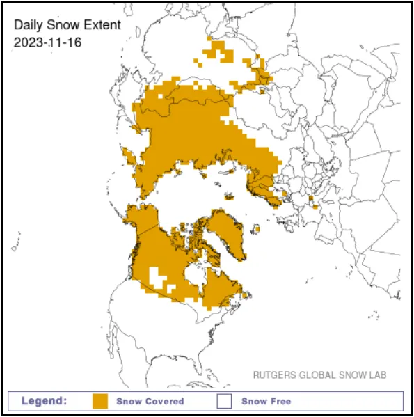
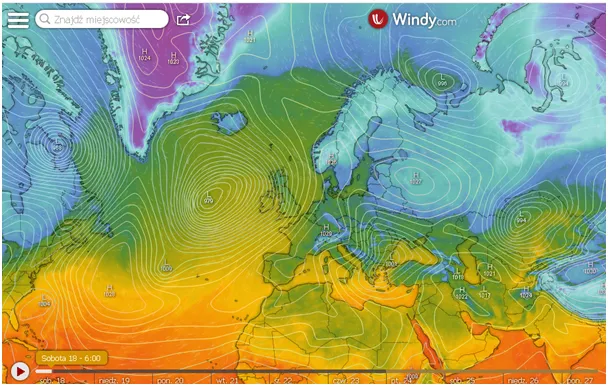

Poznasz pana po cholewach.
Ludzka pamięć jest zawodna i łatwo poddaje się naszym przekonaniom, dlatego człowiek prowadzi archiwa, by mieć obiektywne dane o przeszłości.
Przymrozki w listopadzie dla Mazowsza to norma, w 2015 było minus 6 st. C. Aby mieć szerszy pogląd na świat zajrzyjmy do monitoringu śniegu na północnej półkuli. Sezon zaczął się rekordowo i trzyma poziom. Na drugim grafie ilość wody związanej w śniegu na północnej półkuli. Mapka pokazuje gdzie on zalega. Ciepłe południowe morza będą przynosiły nam ocieplenia, ale niestety najczęściej wraz z chmurami, dlatego polecam małe akwarium jako źródło światłą dla naszych oczu.
Atlantyk i Morze Śródziemne kształtują klimat w naszym regionie. Na tej samej szerokości geograficznej za naszą wschodnią granicą karty rozdaje Generał Zima. Tani diesel napędza machinę zniszczenia, a mógłby napędzać lokomotywy z tanimi, tropikalnymi owocami jadącymi do nas z dalekiej Azji.

Wuj Sam jednak postanowił, że zamiast tanich mandarynek z Azji mamy kupować od niego drogi gaz.

Miałem to szczęście i przechodziłem właśnie obok Morza Śródziemnego, niestety „służbowo” i nie mogłem rozłożyć się pod parasolem na dłużej, ale kawa z widokiem stawia szybko na nogi.

Z powodu służbowego stroju miałem też okazję skorzystać z usług pucybuta. Na wielkim dworcu autobusowym, w trakcie krótkiej przerwy, dosłownie w 3 minuty, za całe 2 zł sympatyczny Turek zrobił moim butom ucztę. Najpierw odkurzanie, potem „farbowanie”, potem pucowanie, 2 rodzaje pasty, kilka różnych szczotek, specjalne dekturki (podstawowy budulec państwa polskiego) wsuwane przy nodze, by nie zabrudzić skarpet. Nowe czasy to wyzwanie dla pucybuta, ludzie noszą białe buty z plastiku i rynek się kurczy.

Na szczęście w Turcji poważni panowie noszą tradycyjne buty. Kierowca autobusu na dłuższych przystankach zdejmuje takie buty i myje nogi zimną wodą, podobnie jak to się robi przed wejściem do meczetu. Korzystam z dobrych podpowiedzi i polecam wszystkim, szczególnie warszawskim taksówkarzom.
Paweł Klimczewski
Proszę linkować do tej strony. Poniżej info jak można mnie wesprzeć w działalności publicystycznej./em>
Dziękuję ze wsparcie niezależności mediów w Polsce.